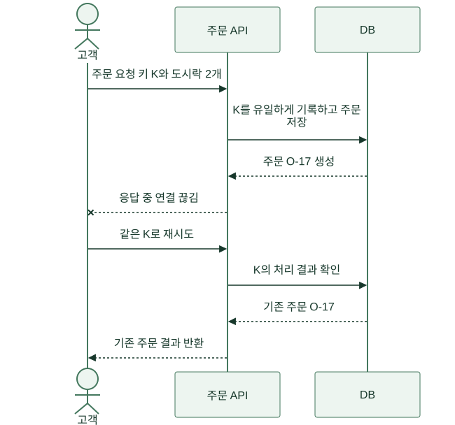

“도시락을 미리 주문하는 버튼 하나면 돼요.” 식당 사장 수진의 말에 개발자 민서는 고개를 끄덕였습니다. 메뉴를 보여 주고, 수량을 받고, 저장하면 끝일 것 같았습니다. 사흘 뒤 첫 주문이 들어왔습니다. 그런데 같은 고객 이름으로 같은 도시락이 두 번 찍혔습니다.
이 글은 가상의 주문 서비스 ‘한끼픽’을 처음 만드는 여섯 주를 따라갑니다. 인물과 사건은 설명용 설정입니다. 개발이 처음인 독자는 코드 문법보다 “왜 이 규칙이 필요해졌을까?”를 따라가면 됩니다. 소프트웨어는 화면을 띄우는 순간보다, 사람이 예상과 다르게 행동할 때 더 많은 질문을 던집니다.
1. 월요일 — 버튼을 그리기 전에 주문의 끝을 물었다
민서는 수진에게 화면 그림을 보여 줬습니다. 수진은 주문 완료 문구를 보더니 말했습니다. “이때부터 주방이 만들면 되죠?” 민서는 입금 확인 뒤에 만드는 것으로 생각하고 있었습니다. 같은 ‘주문 완료’가 두 사람에게 다른 순간을 뜻했던 것입니다.
둘은 손님 한 명이 도시락을 받기까지 실제로 걸어 봤습니다. 메뉴 선택, 주문 접수, 가게 확인, 조리, 수령을 차례로 적었습니다. 결제는 첫 시험 운영에서 현장 결제로 제한했습니다. 온라인 결제까지 한꺼번에 넣으면 결제 실패·환불과 주문의 관계를 검토할 시간이 부족했기 때문입니다.
{kind=link}
이 그림은 화면 목록이 아닙니다. 화면이 지원해야 할 행동의 순서입니다. 민서는 ‘주문이 접수됐다’와 ‘가게가 만들기로 했다’를 다른 상태로 저장하기로 했습니다. 접수만 된 주문을 사장님이 거절할 수 있어야 했고, 조리가 시작된 뒤에는 고객 혼자 취소하지 못하도록 협의했습니다.
2. 수요일 — “잘 되면 완료”를 확인 가능한 문장으로 바꿨다
처음 작업 목록에는 ‘주문 기능 개발’이라고만 적혀 있었습니다. 민서는 버튼을 눌러 DB에 한 줄이 생기면 끝났다고 생각했고, 수진은 품절과 취소까지 되는 줄 알았습니다. 둘은 완료를 판단할 구체적인 예를 만들었습니다.
| 상황 | 사용자의 행동 | 확인할 결과 |
|---|---|---|
| 판매 가능한 도시락 2개 | 주문 버튼 누름 | 접수 번호 하나와 수량 2개 표시 |
| 수량이 0개 | 주문 시도 | 저장하지 않고 수량을 고치도록 안내 |
| 이미 품절된 메뉴 | 주문 시도 | 접수하지 않고 품절 안내 |
| 같은 요청이 다시 도착 | 재전송 | 새 주문을 만들지 않고 기존 접수 결과 반환 |
이 표는 요구사항을 시험할 수 있는 형태로 만든 것입니다. 문장을 많이 쓰는 것이 목적은 아니었습니다. 서로 다르게 상상하던 결과를 미리 드러내는 일이었습니다. 수진은 품절 처리를 주문 화면에서만 막으면 되는지 물었고, 민서는 “화면이 열려 있는 동안에도 품절될 수 있어서 서버에서도 확인해야 해요”라고 설명했습니다.
브라우저의 수량 제한은 사용자를 돕는 장치이고, 서버의 확인은 잘못된 요청이 실제 주문이 되는 것을 막는 규칙입니다. 같은 검사가 두 곳에 있는 이유가 다릅니다. 화면 검사만 믿으면 다른 프로그램이 보내는 요청이나 오래 열린 화면의 요청을 막을 수 없습니다.
3. 첫 금요일 — 고객은 버튼을 두 번 누를 수 있다
점심시간에 응답이 늦자 고객 준호는 버튼을 다시 눌렀습니다. 화면에서 버튼을 잠깐 비활성화했지만 충분하지 않았습니다. 새로고침이나 통신 재시도로 같은 요청이 다시 도착할 수 있었기 때문입니다. 팀은 같은 주문 시도를 식별할 요청 키를 만들었습니다.
서버는 로그인한 고객과 요청 키의 조합에 중복이 생기지 않도록 DB 제약을 두었습니다. 처음 들어온 요청은 주문을 만들고 결과를 기록합니다. 같은 키로 재시도하면 이전 결과를 돌려줍니다. 아직 처리 중이면 처리 중임을 알리고, 같은 키인데 수량이나 메뉴가 다르면 잘못된 재사용으로 거절합니다. 단순히 “이미 있는지 조회하고 없으면 저장”만 하면 두 요청이 동시에 조회를 통과할 수 있어 DB의 중복 제한도 필요했습니다.
{kind=link}

그림 크게 보기 ↗같은 요청을 반복해도 주문이 계속 늘지 않는 성질을 멱등성이라고 합니다. 실제 API도 이 방식을 사용하지만 키의 보관 기간과 실패 응답 처리 정책은 제품마다 다릅니다. 예를 들어 Stripe의 멱등 요청 문서는 같은 키로 재시도하는 방법과 키 재사용 조건을 설명합니다. 한끼픽의 정책을 그 제품과 같다고 가정하지 않고 따로 정했습니다.
수진은 “사용자가 실수하지 못하게 하면 안 돼요?”라고 물었습니다. 민서는 버튼을 잘 만드는 일과 반복 요청을 안전하게 처리하는 일이 모두 필요하다고 답했습니다. 통신 장애까지 사용자의 조심성으로 해결할 수는 없었습니다.
4. 둘째 주 — 취소 버튼이 조리 중인 도시락을 없앴다
새 취소 버튼은 주문 행의 상태를 ‘취소’로 바꾸기만 했습니다. 가게가 조리를 시작하는 순간 고객이 취소하면 어떤 결과가 맞을까요? “현재 상태를 보고 바꾼다”는 말도 충분하지 않았습니다. 두 사람이 거의 동시에 상태를 확인할 수 있었기 때문입니다.
팀은 가능한 상태 이동을 그렸습니다. 상태도는 지금 어떤 상태이며 어떤 사건이 다음 상태로 옮기는지 보여 줍니다. 조리 시작 이후의 취소는 고객 버튼으로 즉시 끝내지 않고 가게에 문의하도록 정했습니다. 실제 음식점 정책은 다를 수 있으며, 이 이야기는 합의한 규칙을 프로그램에 옮기는 과정을 보여 줍니다.
{kind=link}

그림 크게 보기 ↗구현에서는 현재 상태가 예상한 상태일 때만 바꾸는 조건부 갱신을 사용했습니다. 취소와 조리 시작이 경쟁하면 하나가 먼저 성공하고 다른 쪽은 바뀐 상태를 다시 확인합니다. 작업 하나하나는 짧아도 여러 요청이 동시에 도착할 때의 규칙을 생각해야 합니다.
이제 오류 메시지도 달라졌습니다. ‘처리 실패’ 대신 ‘가게에서 조리를 시작했습니다. 취소는 가게에 문의해 주세요’라고 안내했습니다. 시스템이 알아낸 현재 상태를 사용자가 다음 행동을 고르는 데 쓴 것입니다.
5. 셋째 주 — 파일 하나에 다 넣으니 작은 수정도 무서워졌다
주문 API 파일에는 입력 확인, 가격 계산, DB 저장, 알림 발송이 뒤섞여 있었습니다. 할인 규칙을 바꾸려던 민서는 알림 코드까지 읽어야 했습니다. 팀은 서비스를 여러 서버로 나누기 전에 한 프로그램 안의 책임부터 정리했습니다.
입력을 받는 부분은 요청 형식을 확인합니다. 주문 서비스는 주문 절차를 조정합니다. 주문 객체는 상태를 바꿀 수 있는지 판단합니다. 저장소는 DB에 기록하는 일을 맡습니다. 이름을 나눈다고 자동으로 좋은 설계가 되는 것은 아니므로, 실제 변경 이유가 다른 부분을 기준으로 나눴습니다.
{kind=link}

그림 크게 보기 ↗화살표는 한 부분이 다른 부분을 사용한다는 뜻입니다. 이 그림은 실행 순서를 나타내는 앞의 시퀀스 그림과 다릅니다. 민서는 알림 업체를 바꿔도 주문 취소 규칙을 고치지 않도록 경계를 잡았습니다. 작은 팀이 이해할 수 있는 크기를 유지하는 것이 목표여서, 모든 함수에 별도 계층을 만드는 일은 피했습니다.
6. 넷째 주 — 테스트가 초록색인데 실제 주문은 실패했다
수량 계산과 상태 변경을 확인하는 빠른 테스트는 모두 통과했습니다. 하지만 실제 DB에 연결하니 같은 요청 키가 들어올 때 오류가 그대로 화면에 노출됐습니다. 테스트에서 DB를 흉내 낸 대역은 실제 중복 제약의 동작까지 보여 주지 못했습니다.
팀은 모든 것을 브라우저에서만 확인하지도, 함수 테스트만으로 충분하다고 보지도 않았습니다. 서로 다른 실패를 잡을 검사를 나눴습니다. Scrum Guide의 완료 기준 설명처럼 완료의 의미를 공유해야 한다는 생각을 참고하되, 아래 표 자체는 한끼픽이 정한 검증 방식입니다.
| 검사 범위 | 이 팀이 확인한 것 | 이 검사만으로 알 수 없는 것 |
|---|---|---|
| 함수·객체 | 금액 계산, 허용된 상태 이동 | 실제 DB 제약과 네트워크 |
| DB와 API 연결 | 중복 요청, 트랜잭션, 오류 응답 | 고객이 안내를 이해하는지 |
| 브라우저의 주요 흐름 | 주문·품절·취소·재시도 | 모든 동시 실행 조합 |
| 가게와 시험 운영 | 주방 전달, 잘못된 주문 대응 | 대규모 접속 때의 성능 |
특히 중복 주문은 요청을 동시에 보내는 검사로 확인했습니다. 순서대로 두 번 호출하는 검사와 동시에 도착하는 검사는 다릅니다. 테스트가 버그가 없음을 증명해 주지는 않지만, 어떤 실패를 막으려는지 명확하면 수정할 때 잃지 말아야 할 동작을 지킬 수 있습니다.
7. 다섯째 주 — 배포 버튼 뒤에 돌아갈 길을 만들었다
새 버전을 모든 사용자에게 한 번에 적용하던 날 오류가 늘었습니다. 팀은 먼저 일부 요청에만 새 버전을 적용하고 오류율과 주문 성공을 비교하기로 했습니다. 문제가 생기면 새 기능을 끄거나 이전 프로그램으로 돌리는 절차도 적었습니다.
그런데 DB 열을 바로 삭제했다면 이전 프로그램이 돌아와도 그 열을 읽지 못합니다. 되돌리기를 준비한다는 것은 파일 하나를 이전 버전으로 바꾸는 일보다 넓었습니다. 팀은 새 열 추가, 호환되는 프로그램 배포, 데이터 이행, 이전 방식 제거를 나눴습니다. 한 번에 끝내는 대신 새 버전과 이전 버전이 잠시 함께 동작할 수 있게 했습니다.
{kind=link}

그림 크게 보기 ↗8. 여섯째 주 — 버튼은 그대로인데 그 뒤의 약속이 달라졌다
고객에게 보이는 주문 버튼은 첫 주와 크게 다르지 않았습니다. 하지만 그 뒤에는 중복 요청을 구분하는 키, 상태 변경 규칙, 책임이 나뉜 코드, 실제 DB를 쓰는 검사, 돌아갈 수 있는 배포가 생겼습니다. 이 작업들은 화면 수를 늘리지 않았지만 도시락을 두 번 만드는 일을 줄이는 데 필요했습니다.
민서는 이제 “버튼 하나면 돼요”라는 말을 들으면 거절부터 하지 않습니다. 대신 누가 누르고, 무엇이 저장돼야 하고, 응답을 못 받으면 어떻게 되며, 다른 사람이 동시에 바꾸면 어떤 결과가 맞는지 묻습니다. 좋은 질문이 생기면 코드는 오히려 덜 복잡해질 수 있습니다. 잘못 이해한 규칙을 뒤늦게 덧붙이는 일이 줄기 때문입니다.
당신이 다음 기능을 맡는다면 버튼을 먼저 그려도 좋습니다. 다만 그 그림 옆에 실패 장면 하나를 같이 적어 보세요. “두 번 눌렀다”, “품절과 동시에 눌렀다”, “저장은 됐는데 응답을 못 받았다.” 그 한 줄이 실무 개발의 출발점이 됩니다.